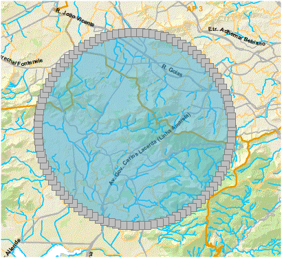
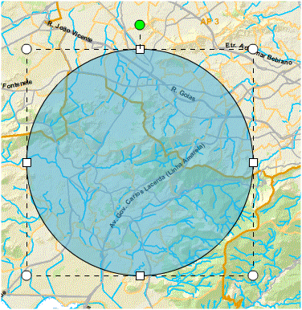

Editar Feições
Permite editar feições desenhadas no mapa.
Passos para editar pontos de feição:
1 - Clicar uma vez sobre o gráfico desenhado;

2 - Editar os pontos da forma desejada;
3 - Clicar sobre o mapa para finalizar edição;
Passos para editar posição e tamanho de feição:
1 - Clicar uma vez sobre o gráfico desenhado e aguardar opção de editar pontos ser exibida;

2 - Clicar novamente sobre o gráfico para que sejam apresentadas as opções para redimensionamento;
3 - Clicar sobre alguma extremidade e arrastar para manipular o tamanho.
Nota: o usuário poderá optar em rotacionar o gráfico, basta clicar sobre a opção apresentada com o símbolo verde.